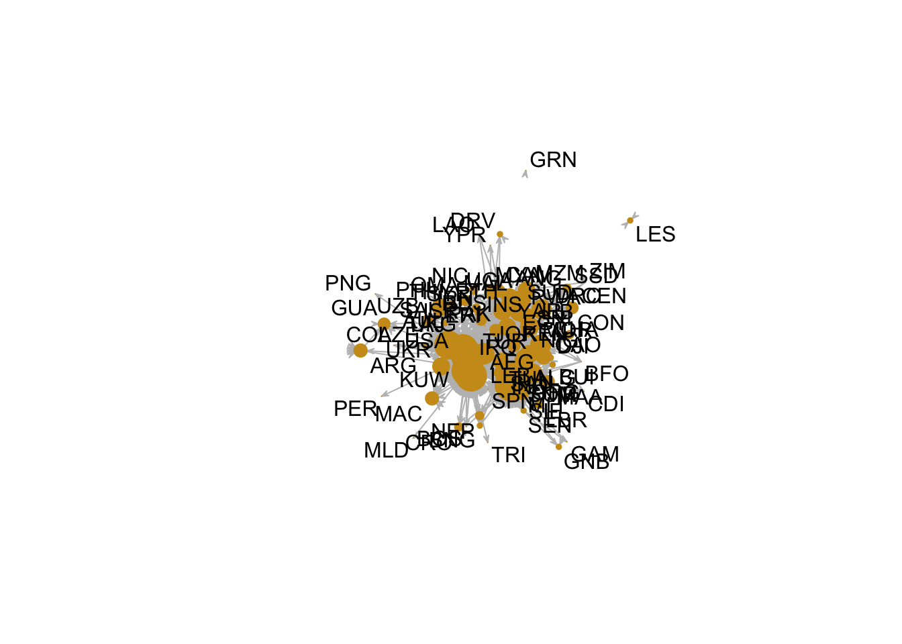

Today, we are applying network analysis to the question of the topic of external support by other states for rebels and governments that fight each other in domestic conflict. During domestic conflict or intra-state conflict, we usually have one or more rebel groups fighting the government. Foreign governments can either decide to support the rebels or they can decide to support the government.
We will be using the UCDP dataset to look at these networks of support. On the one hand, we want to understand in which states we saw rebels fighting that were supported by external states. On the other hand, we want to understand where governments at war with rebels received support by other external states.
As usual, don’t forget to call the libraries that you need for your code to run. I am adding a few more packages that you might not have used before. Remember to install them once (if you never used them) and then load them.
library(statnet)
library(tidyverse)
library(countrycode)
#install.packages("haven")
# this package teaches R how to read stata files (dta)
library(haven)
#install.packages("haven")
# this package teaches R how to read xls and xlsx sheets
library(readxl)The UCDP External Support dataset provides information on the existence, type, and provider of external support for all warring parties (non-state and governments) coded as active in UCDP data, on an annual basis, between 1975 and 2017. The triadic version of the datata constains the warring-party-supporter-opponent-year (or triad-year) as units of analysis.
While we could use this data to analyse both support for rebels or
governments, we will focus in this second network only on states
supporting other governments that currently fight a rebel group in a
domestic conflict. Again we will read the data, clean it and bring it in
network shape. We remove observations of support for non-state actors
with the help of ext_nonstate (whether the sender state is
a state) and actor_nonstate (whether the receiving actor is
a state).
The relevant variables we will focus on are ext_name
(the name of the actor providing support to the government),
actor_name (the name of the warring party receiving
support) and the year of support given.
ucdp <- read_xlsx("~/Desktop/temp/ucdp-esd-ty-181.xlsx")
# sender of foreign support must be a state!
ucdp <- filter(ucdp, ext_nonstate == 0)
# recipient of foreign support must be a government!
ucdp <- filter(ucdp, actor_nonstate == 0)
# select relevant columns
ucdp <- select(ucdp, c("ext_name","actor_name","year"))
# give them more intuitive names
names(ucdp) <- c("supporter","recipient","year")
# fix double-entries
ucdp <- separate_rows(ucdp,"recipient",sep = ",")
# turn country codes into names
ucdp$recipient <- countrycode(ucdp$recipient,origin="country.name",
destination = "cowc")
ucdp$supporter <- countrycode(ucdp$supporter,origin="country.name",
destination = "cowc")
# remove entry that seem wrong
ucdp <- filter(ucdp, supporter != "Emirati elements")
# get string of unique states in the data
ucdp_states <- unique(c(as.character(ucdp$supporter),
as.character(ucdp$recipient)))
# make an empty matrix
ucdpMat <- matrix(0,nrow=length(ucdp_states),ncol=length(ucdp_states))
rownames(ucdpMat) <- ucdp_states
colnames(ucdpMat) <- ucdp_states
# fill the empty matrix
for(i in 1:dim(ucdp)[1]){
ucdpMat[as.character(ucdp$supporter[i]),as.character(ucdp$recipient[i])] <-
ucdpMat[as.character(ucdp$supporter[i]),as.character(ucdp$recipient[i])]+1
}
# tell R to understand this matrix as a network
ucdpNet <- network(ucdpMat,
directed=TRUE)
network.vertex.names(ucdpNet) <- ucdp_statesBased on this network of external government support, we can try to identify the countries that send support to a lot of different governments in different states (outdegree centrality) but also which states are heavy receivers of external support by various other states (indegree centrality).
# which states target other states the most by supporting rebels (outdegree centrality)
out.n <- degree(ucdpNet,cmode="outdegree")
# which starts are the most targeted through other states' support of rebels (indegree centrality)
in.n <- degree(ucdpNet,cmode="indegree")
centrality <- data.frame(state=ucdp_states,
indegree = in.n,
outdegree = out.n)Countries with the highest outdegree centrality:
# Outdegree: USA, France, Russia, UK
centrality |> arrange(-outdegree) |> head()## state indegree outdegree
## 1 USA 72 56
## 2 FRN 0 29
## 3 RUS 1 28
## 4 UKG 60 22
## 5 CHN 0 16
## 6 GMY 0 14Countries with the highest indegree centrality:
# Indegree: Mali, USA, Afghanistan, UK, Iraq
centrality |> arrange(-indegree) |> head()## state indegree outdegree
## 1 MLI 75 5
## 2 USA 72 56
## 3 AFG 69 4
## 4 UKG 60 22
## 5 IRQ 58 5
## 6 AUL 45 10To visualise the network, I plot the size of the nodes bigger for higher levels of indegree centrality.
gplot(ucdpNet,
label=ucdp_states,
vertex.cex=log(in.n),
edge.lwd=0.001,
vertex.col ="goldenrod3",vertex.border = "goldenrod3",
edge.col="gray",
gmode="digraph")